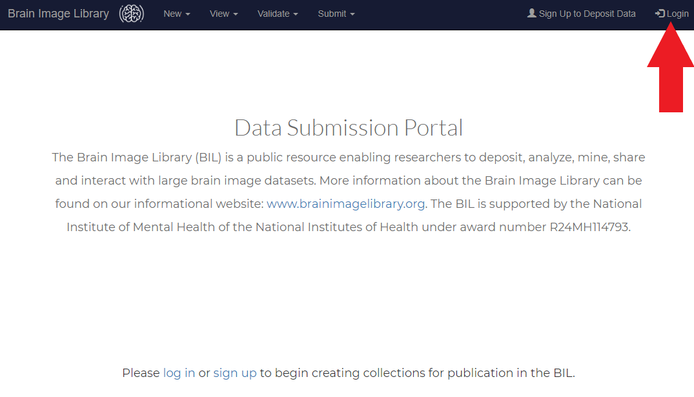
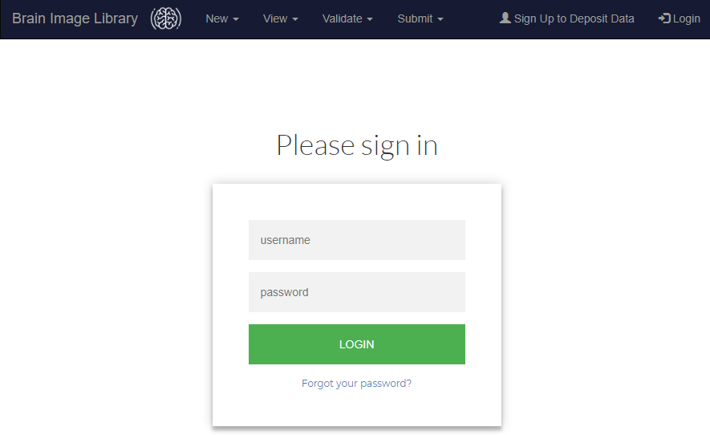
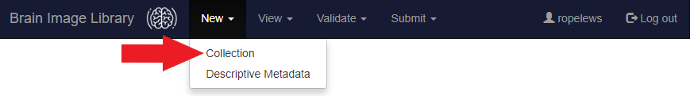
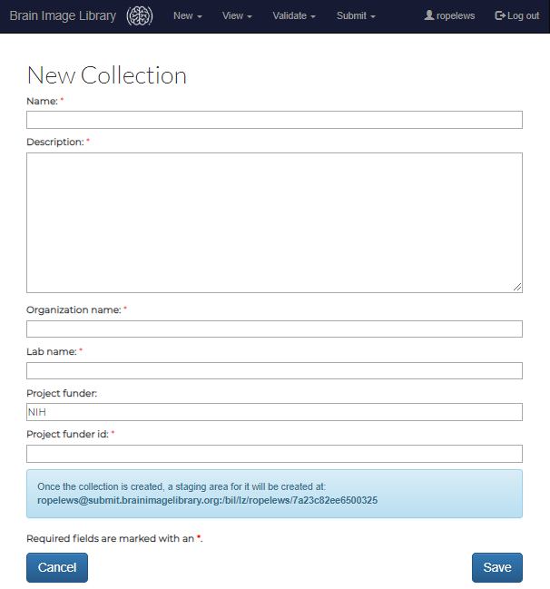
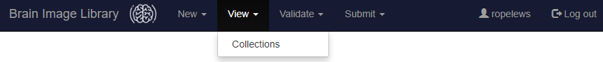
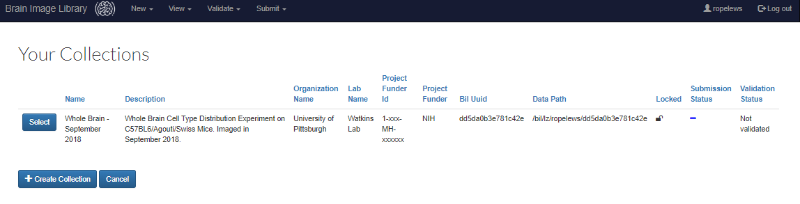

If you have problems with the steps below, do not hesitate to contact the BIL Helpdesk for assistance.
Follow these instructions to create an XSEDE portal Account.
Send email to bil-support@psc.edu along with your XSEDE Portal Account. You will receive an email message once access has been enabled. Please allow 24 hours for access to be granted.
Follow these instructions to set your initial password.

Clicking on this menu option, will bring up the login page (shown below).Enter your PSC username and password on this page. If you are having problems logging in, please contact the BIL Helpdesk.

The next step in the submission process is to create a collection through the portal. A collection is an ingestion wrapper that contains one or more related datasets and metadata. (A dataset is a stand-alone entry (e.g. an image-volume) with metadata. A dataset can contain many 2d image files that are assembled computationally to form a more complex two or three dimensional volume.) Collections are tagged with common identifying metadata (such as the NIH project that the data is associated with) that upon submission will be propagated to each item in the collection. This important tagging information will allow BIL to report to NIH on data that has begun, but has not yet completed the submission process.
In general, smaller collections are recommended because all datasets within a collection must pass the validation process for the collection bundle to be submitted. A collection can contain a single dataset.
Each collection bundle will have a unique dropbox-like landing zone directory associated with it (e.g. /bil/lz/user/6247417d691a4548. This landing zone directory is where the datasets belonging to the collection must be transferred to for validation and ingestion processing.
To create a collection, select the Collection sub-option of the New menu. (See red arrow in the image below.)

Next, enter the required metadata associated with the collection (see image below).

As mentioned above, the submission portal create a landing zone for image data to be uploaded to. To find this landing zone, select the Collections sub-option of the View menu.

The landing zone is listed under the Data Path column:

There are many supported ways to transfer files into the landing zone directory through the data transfer nodes including rsync, Globus Online, sftp, and scp. Due to size, image data can not be uploaded through the submission portal. It must be uploaded separately through the BIL data transfer nodes, which are available at the virtual host: upload.brainimagelibrary.org. All users authorized to use the data submission portal (submit.brainimagelibrary.org) are also authorized to use the data transfer nodes (upload.brainimagelibrary.org). The username and passwords are the same on both systems.
testuert@test.psc.edu:~$ rsync -lrtpDvP testproj testuser@upload.brainimagelibrary.org:/bil/lz/testuser/abcdef0123456789
sending incremental file list
testproj/
testproj/data1.tiff
1356122 100% 126.20MB/s 0:00:00 (xfer#1, to-check=0/2)
sent 1356392 bytes received 35 bytes 2712854.00 bytes/sec
total size is 1356122 speedup is 1.00
$ sftp testuser@upload.brainimagelibrary.org
The authenticity of host 'upload.brainimagelibrary.org (128.182.108.164)' can't be established.
ECDSA key fingerprint is 32:cf:46:44:3d:9c:8e:b2:1d:14:03:66:45:0b:11:29.
Are you sure you want to continue connecting (yes/no)? yes
Warning: Permanently added 'upload.brainimagelibrary.org,128.182.108.164' (ECDSA) to the list of known hosts.
testuser@upload.brainimagelibrary.org's password:
Connected to upload.brainimagelibrary.org.
sftp> cd /bil/lz/testuser/abcdef0123456789
sftp> mkdir /bil/lz/testuser/abcdef0123456789/mouse1
sftp> cd /bil/lz/testuser/abcdef0123456789/mouse1
sftp> put data1.tiff
Uploading data1.tiff to /bil/lz/testuser/abcdef0123456789/mouse1/data1.tiff
data1.tiff 0% 0 0.0KB/s --:-- ETA
data1.tiff 100% 1324KB 1.3MB/s 00:00
sftp> exit
Due to their ability to resume interupted transfers, the use of rsync and Globus is recommended over sftp.
$ scp data1.tiff testuser@upload.brainimagelibrary.org:/bil/lz/abcdef0123456789/mouse1/data1.tiff
testuser@upload.brainimagelibrary.org's password:
data1.tiff 0% 0 0.0KB/s --:-- ETA
data1.tiff 100% 1324KB 1.3MB/s 00:00
Due to their ability to resume interupted transfers, the use of rsync and Globus is recommended over scp.
To encourage maximal automatic metadata scraping, the library STRONGLY
RECOMMENDS ORIGINAL FILES CAPTURED BY THE MICROSCOPE be submitted.
The ingestion process supports native TIFF and JPEG 2000 image file formats
as well as formats that are convertible to the OME-TIFF format via the
bioformats tool. For more information on the bioformats tool see:
https://docs.openmicroscopy.org/bio-formats/5.7.3/formats/index.html.
Metadata for each dataset can be entered manually through the contributor portal, or by uploading a spreadsheet to a collection via the contributor portal. Please see the Contributor Portal for the most recent metadata specification.
Once all data has been uploaded to the landing zone area and all metadata has been uploaded to the contributor portal, click on the validate button for the collection.
The validation process will lock the dataset for changes and scrape additional metadata from the submitted files. When the process completes, a log will be available for viewing through the portal.
When the validation process completes, a log will be accessable from the contributor portal. Please examine this log and correctany identified warnings and errors. (note: Only an error will provent submission, a warning will not necessarly prevent data submission. select suppress warnings and resubmit.)
Once you are satisfied that all errors and appropriate warnings have been corrected, select submit.
File formats
To encourage maximal automatic metadata scraping, the library STRONGLY RECOMMENDS ORIGINAL FILES CAPTURED BY THE MICROSCOPE be submitted.
The ingestion process supports native TIFF and JPEG 2000 image file formats as well as formats that are convertible to the OME-TIFF format via the bioformats tool. (For more information on the bioformats tool see: https://docs.openmicroscopy.org/bio-formats/5.7.3/formats/index.html.)
Please see the Contributor Portal for the most recent metadata specification.
Pre-Submission Processing of Files:
If you need to make corrections or do other pre-submission processing on one or more files after they heve been transfered to the landing zone, you can log in with ssh to c00.bil.psc.edu.
By default, the files in the landing zone will only be accessible by you and BIL support staff. You can, of course, change the permissions on the landing zone to be group or world readable with chmod. This may help if you need to share the data with others (such as other lab group members) before completing the submission process.
Assistance and Help
If you need assistance with anything, please email: bil-support@psc.edu. If the issue is time-critical, you may phone the PSC hotline at: 412-268-6350. Please note that we are located in the Eastern Time zone.
If you are having networking issues related to data transfer (including slow transfer speeds), email us at at bil-support@psc.edu and one of our networking experts will get in contact with you. If network issues prevent data transfer, we may recommend that you send your datasets to us via an alternate path such on our BrainBall portable device or on LTO tape.
Distribution Licence
Data submitted to the library will be redistributed to others under a Creative Commons Attribution-ShareAlike 4.0 International License. In addition, data submitters expressly permit the Library data to be transferred to and maintained by another open-source repository or by a government agency such as the US National Institutes of Health in the future.Release of entries
Data submitted to the library, by default, will be released as soon as possible once data has been validated. Optionally, data submitters can select a limited embargo period for their submitted data of up to one year.
Assignment of DOI
DOI's are not being issued at the current time. We expect to be able to issue DOI's for datasets as soon as metadata specifications are stabilized.
Changes to entries after submission
Changes may be made to submitted entries prior to release. Minor changes, such as updating metadata or adding citations may be made after dataset release. Major revisions will require the existing entry to be marked as obsolete and replaced by a new entry. The DOI pointing to the metadata for the obsolete entry may have a superseded-by field added to it to point users to the superceded entry. There may be also be circumstances in which an entry in the library may be marked as withdrawn (for example, research misconduct). In those cases, the DOI for the obsolete entry will have a withdrawn field added to it.
Sharing data and computing on data prior to submission
PSC's Bridges computational resource is an excellent place to explore and share your data with others prior to submission. The data submission landing zone path for your data on Bridges is very fast.
In addition, public data released by the BRAIN Image Library is also available on PSC's Bridges Computational Resource. The Bridges computational resource is available through XSEDE for non-commercial research. Corporate and other users can gain access through PSC's corporate programs: https://www.psc.edu/services/corporate-programs.
Use of Pre-publication Data
The Library expects all users of the submitted data to grant the authors of the data the right to publish the first paper concerning the dataset within three years of deposit. If there is no publication associated with the dataset, please contact the listed authors for permission to publish. There is no restriction on post-publication data.